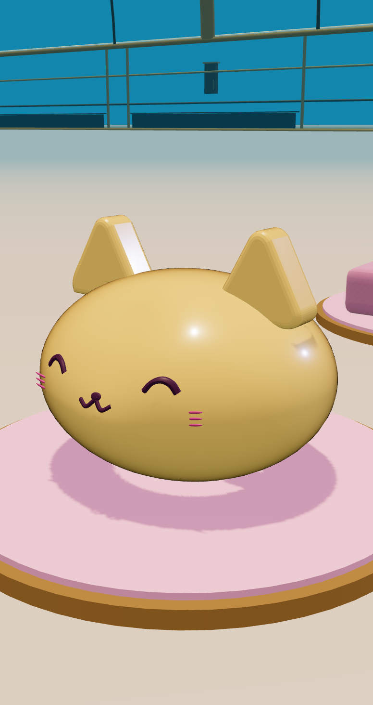
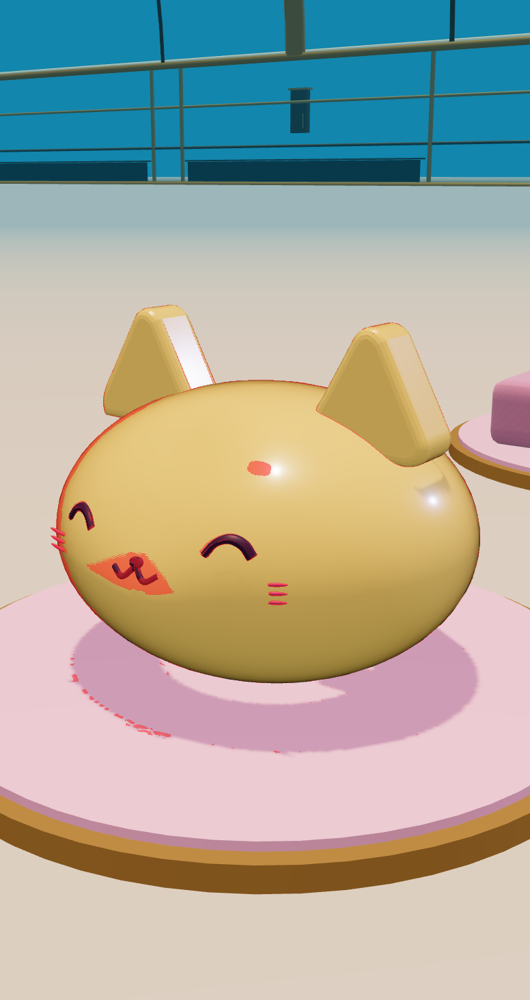

material-butter-hold
Reference
Original reference A/B is visible in the user conversation. Original image bytes are not mounted here. This slot is explicitly incomplete; no generated replacement is used.
Actual game

Same-camera state difference

Camera, timestep, material measurements and hash
{
"image": "material-butter-hold.png",
"sha256": "b2cb65c0029d6016a307ef28e02324cfe41abcd47d323d45adf9472ad4243f99",
"size": [
776,
1464
],
"meanRGB": [
172.51803243479242,
172.1272041011774,
158.93120017886315
],
"metadata": {
"material": "butter",
"solver": {
"sleeping": false,
"particles": 343,
"constraints": 3150,
"contacts": 0,
"steps": 180,
"time": 2.9999999999999942,
"volumeRatio": 0.9988347731040625,
"minTetRatio": 0.9105887437840189,
"maxDeformation": 0.2139553719793662,
"maxStrain": 0.15942108641318573,
"damage": 0.598224401473999,
"faults": 0,
"limitedSteps": 0,
"lastPhysicsMs": 1.5999999940395355,
"droppedTime": 0
},
"camera": {
"position": [
3055,
-444.448,
1246
],
"target": [
3048,
-447.96799999999996,
1236
],
"fov": 48,
"aspect": 0.5300546448087432,
"near": 0.08,
"far": 20000
},
"objectPosition": [
3048,
-449.948,
1236
],
"renderer": {
"dpr": 2,
"shadow": 1,
"toneMapping": 4,
"info": {
"frame": 8,
"calls": 71,
"triangles": 671722,
"points": 0,
"lines": 0
}
},
"time": 2.9999999999999942
},
"group": "material-butter",
"sameCameraAndRenderSettings": true,
"edgeMeanAbsoluteDifference": 0.8770999403789458,
"meanAbsolutePixelDifference": 0.6333360913939121,
"changedPixelFraction": 0.009223071939609036,
"differenceImage": "material-butter-hold-difference.png"
}